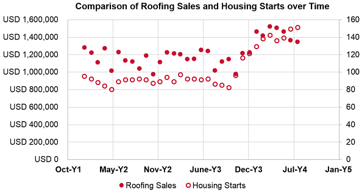
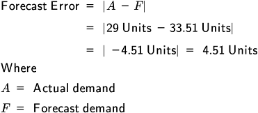
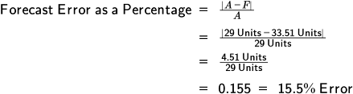

Sales and operations planning (S&OP) is an important process for supply chain managers because it is how the organization comes to consensus on what is needed and what is capable of being purchased or produced. Here we present the big-picture overview of S&OP, followed by a discussion of the important inputs to and outputs of the process. Reconciliation is the final step in the S&OP process, where supply, demand, and financial plans are reconciled with each other. A discussion of how to implement S&OP is also provided. Finally, we address demand management and prioritization, which is the final component of the demand management process.
📖 ASCM Definition — sales and operations planning (S&OP):
S&OP is performed at least once a month and is reviewed by management at an aggregate (product family) level. The process must reconcile all supply, demand, and new product plans at both the detail and aggregate levels and connect to the business plan. It is the definitive statement of the company's plans for the near to intermediate term, covering a horizon sufficient to plan for resources and to support the annual business planning process.
Executed properly, the S&OP process links the strategic plans for the business with its execution and reviews performance measurements for continuous improvement.
S&OP stands both for the sales and operations plan and sales and operations planning. It is both a plan and the process that creates, implements, monitors, and continuously improves the plan.
The S&OP process involves a series of meetings to arrive at consensus demand and production plans that reflect the results of demand-side sensing and influencing activities and supply- and finance-side capabilities and constraints.
Wallace and Stahl, authors of Sales and Operations Planning: The How-to Handbook, list the following meetings in S&OP:
Supply planning
Crum and Palmatier, in Demand Management Best Practices, discuss two additional meetings. The first is a product review after the data-gathering step, and the second is a financial review after the supply planning step.
These meetings map to an overall S&OP process. The steps in this process are
Reconciling demand, supply, and financial plans.
The sequence of processes and activities is shown in Exhibit 1-48.

S&OP culminates in a monthly executive meeting to gain agreement on a plan to balance supply with demand, but it requires two weeks or more of team member preparations and preliminary meetings. S&OP can be run on a different timetable, but monthly data collection, analysis, and meetings are typical.
The results of the prior month's meetings are used as the basis for the current month's meetings; replanning is used in each review meeting as well as in the overall process.
The purpose of these meetings is to give each area of the organization sufficient time to prepare tactical plans and study the plans submitted to them so they can assess what impact the plans would have on their area of concern. In this way, the S&OP process ensures that detailed reviews are occurring, that decision makers from each part of the organization get a reliable understanding of the organization's current needs and capabilities, and that checks and balances are in place to give executives understanding of and control over the direction of the organization.
The product review meeting involves updating the status of new product developments, product changes, or other organizational process change initiatives that could affect supply or demand. This meeting involves product and brand management, but other managers involved in process change initiatives could also attend as needed, such as involving an IT professional if the organization is implementing a new enterprise resources planning (ERP) system. Since a product or product feature's time to market strongly impacts demand management activities, this meeting provides demand-side professionals with vital information on which to base their assumptions. The quality of this review rests on the quality of the data gathering that is done.
Timing the S&OP process to begin after the best data are available each month is a best practice.
Shortly after the end of the month, all the files necessary to develop the new statistical forecast should be updated. This needs to be done quickly to keep the process moving ahead on time. Timing the S&OP process to begin after the best data are available each month is a best practice.
The demand planning phase includes a demand review meeting (or demand consensus review meeting), which is a meeting held between product and brand management, marketing, and sales professionals to agree to a single set of demand numbers and to document the assumptions used to make the decisions.
The highest ranking demand-side professional, such as the vice president of sales or marketing, not the demand manager, typically chairs this small, brief meeting between representatives of each department. The demand manager serves more as a facilitator in this meeting, such as by combining the individual plans of product and brand management, marketing, and sales into a single document prior to the meeting with recommended consensus numbers and areas with differences of opinion listed in the notes.
The meeting is not intended to be a lengthy detailed review (this should have occurred prior to the meeting) but a way for the responsible and accountable leaders of each demand-side area to review the big picture and commit to a consensus view of demand that can be passed down to their subordinates and to the financial and supply sides of the organization.
To keep the meeting brief, review is at the product family level; subfamilies are reviewed only on an exception basis. Other methods to promote brevity include reviewing only what has changed since the last meeting, focusing on validating assumptions, and reviewing only significant performance metric results. The rest of the meeting should be spent on what strategies can be employed to close any gaps between the demand plan and business plan revenue goals. The demand manager can facilitate these meetings by preparing demand plan dashboards that consolidate the various departments' plans, highlighting where significant disagreements exist.
Exhibit 1-49 shows an example of such a dashboard for an 18-month demand plan in units. Note that the dashboard also lists examples of key performance metrics, assumptions, events, opportunities, risks, and decisions. Note also that a separate dashboard in monetary units would be provided to show the results of the unit plan in terms of its impact on organizational revenue.

A key aspect of this and other review meetings is replanning. Since the plan is reviewed each month, replanning promotes consensus building. For example, referring to Exhibit 1-49, if there is significant disagreement over the amount or timing of the demand increase from the Period 6 TV ad buy, the demand-side leaders can agree to a number but also agree to revisit it the next month when new information may be available to help clarify the issue. Participants could be assigned research tasks or be asked to communicate with others during the month so that they have better information for the next meeting. The success of the demand plan depends on the quality of the communication process.
Finally, the demand review meeting is a place to review performance metrics in relation to demand and forecast accuracy. Organizations might set rules for exception review of performance metrics. For example, if the demand plan differs from actual demand for a particular product family for three months running, a detailed strategy review should occur to determine what can be done to improve results. Individual metrics could also be color-coded in the dashboard to show exceptions.
Achieving consensus on what to produce can be contentious even between just the demand-side professionals. Setting the tone that disagreement between plan numbers should be an expected occurrence can keep participants from becoming frustrated with the process. Failure to acknowledge these differences or allowing each department to plan and act using its own set of numbers will generate far more conflict down the line because the supply organization will not know which set of numbers to use. This situation is far from rare, especially in an extended supply chain. According to Oliver Wight colleague Ron Ireland, most supply chains operate with between 14 and 25 individual demand forecasts. Those that do use a single set of demand numbers typically have adopted the S&OP process.
This step in the S&OP process results in product and brand management, marketing, and sales representatives issuing an updated medium-term demand plan for current and new products. The demand plan should be reviewed by a senior sales and marketing executive before being entered in the S&OP files. Sometimes this process is called a marketing/sales handshake, because it requires coming to an agreement on a request for product and coordinated demand-influencing activities. The consensus plan arrived at by the demand-side managers is used as the basis in both the supply planning phase and the financial reviews.
The supply planning phase includes a supply review meeting, which uses the consensus demand plan to generate a production plan. The role of the supply management team is to identify any constraints that would prevent operations from being able to satisfy the demand plan. This process is sometimes called the operations handshake, because it requires operations professionals to agree on production plan recommendations that could best fulfill the demand plan while keeping operations profitable. The supply review meeting is used to finalize supply plan recommendations.
During this meeting, the feasibility of meeting the demand plan is discussed related to capacity and profitability constraints. If the demand plan can be met, the production plan will match the demand plan. The supply management team may need to alter the production plan and revise the S&OP data to meet the demand plan as closely as possible. If supply cannot match demand in total units or in product mix, then the meeting involves generating one or more alternative plans that propose solutions to the supply and demand mismatch, such as the following:
Demand management has functional responsibilities and interfaces with other areas in the organization. For example, demand management serves as an intermediary between product development and brand management, marketing, sales, and operations so that all of these functions' plans, communications, influences, and priorities are coordinated to maximize and satisfy demand.
Let's take a closer look at how demand management works with each of these functions.
Product development or design and brand management are typically long-term strategic tasks that can benefit from integration with demand management because it promotes the balanced needs of the supply chain. When demand management is allowed to influence product and brand management, products and services can be designed and branded to reflect what is valuable to the customer. Elements that are not perceived as a value to the customer should be eliminated from the design of the product/service package. (This is a principle of lean thinking.)
Demand management can influence product development and brand management to consider each of the following:
Demand management relies on marketing because marketing must provide input to the demand plan. This input is necessary because marketing and sales are the people who are closest to prospects and customers. At some organizations, marketing and sales are considered to "own" the demand plan, while at others this is the role of the demand manager. At the very least, marketing and sales are typically considered responsible and accountable for forecasting. There is sometimes resistance on the part of marketing and sales to either own the plan or to provide detailed input because this takes away from the time that could otherwise be spent executing marketing and sales activities. The organization must define what inputs are really necessary from marketing and sales and also find ways to make the required inputs more efficient and less time-consuming.
Marketing staff are responsible for finding potential customers and identifying needs the company can solve, creating and maintaining customer demand with communications and promotions, helping to refine product design and packaging to meet customer needs, forecasting demand throughout a product's life cycle, and pricing products and services to be affordable and profitable at the same time.
Marketing traditionally has had little understanding of the processes and requirements surrounding operations management. This lack of understanding works both ways and is the product of the traditional "silo" mentality of departments. Providing a formal demand management function at an organization can provide marketing with expertise on operations and vice versa. Because demand management fits into neither traditional "silo," it is an ideal representative for both interests.
Tailoring demand from a marketing perspective includes setting existing and potential customers' expectations regarding the types of demand that the organization will accept or consider.
Demand management interfaces with marketing in the medium and short term to tailor demand to meet available capacity. Tailoring demand from a marketing perspective includes setting existing and potential customers' expectations regarding the types of demand that the organization will accept or consider. That is, if customers know the rules of the game, they will be more likely to happily work within those rules. This helps avoid situations such as frustrating a potential customer by having to reject an unprofitable customization request that likely took some time to prepare.
Another way demand can be tailored is by raising or lowering prices either semi-permanently or through promotions. Price reductions can stimulate demand in times of excess capacity, and returns to regular pricing can help when there is insufficient capacity.
Sales departments work with customers on a daily basis and make delivery promises. The primary interface demand management has with sales is to implement the demand plan commitments regarding influencing or prioritizing demand. Another interface is to ensure that the demand plan supports the organizational strategy. For example, if the organizational strategy is to develop lifetime customers by maintaining excess capacity, it could be the role of sales staff to identify customers on the basis of potential for loyalty and make offers that may not be initially profitable while up-selling to existing loyal customers.
Salespersons desire to eliminate order backlogs, which means sales staff is not typically interested in minimizing inventories. Their priority is to increase sales by providing the right quantity of supplies at the right place. For similar reasons, a high priority for sales is time to market, especially if the product or service must be ready for a particular selling season, be presented at a tradeshow or convention, or beat the competition to the market. Demand management can champion these requirements with product development, marketing, and operations.
Demand management can work with sales to manage demand in such ways as convincing product and brand management to raise or lower prices for ordering in bulk or for accepting delayed shipments (within the parameters set by marketing). Another role for demand management is to educate sales staff on the limitations of product development, marketing, and operations, for example, not promising to perform custom work without approval or to supply products in excess of maximum production capacity.
Interfacing between the demand side of the organization and manufacturing planning and control is a vital task for demand management, because most operations professionals are highly specialized. According to research by Showalter and White, operations management literature "exhibits a pronounced lack of marketing perspective." They also state that when the marketing perspective is included it is treated "simply as a complicating constraint on the production planning process." A formal demand management function and/or a demand manager can represent product and brand management, marketing, and sales interests in operations-specific technical terms.
Demand management can also facilitate the understanding between operations and the other parties at S&OP meetings, such as by accommodating the requirements of profitable customer segments in production plans. It also plays a stronger role now than in the past due to the emphasis on replacing safety stocks of inventories with shorter lead times and manufacturing flexibility.
Here we discuss the process of reconciling demand, supply, and financial plans. This involves three final meetings: the financial review meeting, the pre-meeting, and the executive meeting.
The financial review meeting analyzes the demand plan in dollars as well as any alternative production (supply) plans for their financial impact and feasibility. The key question that financial professionals will ask is to what degree the plan will achieve or fail to achieve the organization's business and financial goals as stated in the business plan. The financial review meeting will also finalize projections on the revenues, profits, cash flow, or need for capital investments for each alternative and provide a recommendation for the plan that best meets financial goals as well as financial constraints such as budgets, cash flow, or capital expenditure limits.
The pre-meeting, or pre-S&OP meeting, is a meeting between people from prior steps, at least one person from the finance area, the S&OP process owner, and the demand manager. Other pre-S&OP team members might include a number of key supply chain managers and other area managers, such as the plant manager, the logistics manager, the product and brand manager, the customer service manager, and the accounting manager. The team reviews the data and sets the agenda for the S&OP executive meeting. The purpose of the pre-meeting is to identify areas where consensus can be reached without needing executive input and to add the more contentious items to the executive review agenda.
The monthly S&OP executive meeting involves the chief executive officer (CEO); the demand (sales and marketing), supply (operations), and financial executives; and other direct reports to the CEO. Executive sales and operations planning (executive S&OP) has its own definition in the ASCM Supply Chain Dictionary:
The attendees review the plans from the prior meetings with the goal of arriving at a consensus demand plan that meets organizational revenue goals to the extent possible and that everyone agrees to support. To accomplish this goal, the meeting may involve reviewing performance metrics or scorecards, changes since the last meeting, new risks and opportunities, and other events. Executives will want to know whether plans are staying on budget, on schedule, and on scope; how well product mixes are performing; whether current strategies need modifying; whether capacity will be sufficient for the level of demand (at the resource planning level, such as hiring new staff if new products are experiencing high demand); and what decisions will need to be made and when. Decisions that need to be made during the current period are discussed and then finalized, and responsibilities are assigned to ensure execution.
Communication of the agreed-upon S&OP plan is critical to all internal participants.
The assembled executives may accept the decisions and the numbers forwarded from the pre-S&OP meeting, or they may take another path. They will make decisions pertaining to each product family, authorize any decisions with significant financial implications, and compare the demand plan to the business plan to see if actions need to be taken to bring them in line with each other (e.g., additional marketing activities).
Communication of the agreed-upon S&OP plan is critical to all internal participants. For instance, it is critical for sales account managers to understand when material they have requested in the demand plan will not be supplied and therefore they should not make commitments to deliver the product to customers. If supply is available to meet demand, the sales account managers still need to be informed that their sales forecast has been accepted and they can sell against it. Remember, the success of the demand plan depends on the quality of the internal communication process.
Like supply chain management, sales and operations planning rests on the assumption that companies wishing to compete in the expanding global marketplace can and must break down the silo walls between functions and break through the barriers separating supply chain partners. In fact, S&OP is intended to be a planning and controlling tool not just for manufacturing but also for the entire enterprise. Breaking down those barriers, however, doesn't happen quickly and easily.
The most important consideration is the understanding that the plan to generate enough capacity to match supply with aggregate demand must be created, executed, and monitored in collaboration with sales and other functional areas, not in isolation.
We'll look at three aspects of implementing S&OP:
Functional areas within a company and supply chain partners on the outside are accustomed to developing their own plans, controlling their own information, and determining their own actions. S&OP can't function if those assumptions, and those barriers, remain in place.
The basic premise of S&OP is that there should be one plan to unite all the major functions—sales, operations, and finance. Further, S&OP assumes that key players, including executives, will agree to the unified plan, carry it out tactically, and continuously monitor and adjust it in monthly S&OP meetings. The key to getting buy-in to S&OP is to emphasize that it is all about improving communications. As S&OP consultant and author Thomas F. Wallace puts it, "S&OP is as much about institutionalizing communications throughout the organization as it is anything else." If, as Wallace states, you "get all the facts on one sheet of paper" reviewed jointly by the key players monthly, communication has to happen, facts have to be recognized, even if they are negative, and decisions have to made, debated, and acted upon—before the next meeting.
S&OP provides the following organizational benefits:
Link between business planning and tactics. S&OP forms a link between the vision in the strategic and business plans on the sales side and the practical details of the tactical plans on the operations side. The executives of the company are responsible to investors and to one another for making the projections in the business plan a reality. S&OP brings the executives directly into the planning process.
Opportunities to be proactive rather than reactive. The monthly meeting is a chance for executives to respond to changes in economic trends and market conditions as they are occurring.
Definitive short- to medium-term plan. The sales and operations plan is the definitive statement of company plans for the near to intermediate term—typically 12 to 18 months or more. It covers enough time to enable planning for resources and to support the annual long-range business planning process.
Unified, cross-functional plan and process. S&OP brings together a planning team that reconciles all of the functional business plans—not just sales plans and marketing plans, but engineering and development, manufacturing, sourcing, and financing plans—into one unified plan and one unified process.
Bridge between customer value and supply chain efficiency. The S&OP process integrates the tactical focus of the operations side with the customer orientation of the marketing and sales side. There is an inherent tension between the needs of the customer and the evolving quality standards of the supply chain. Reducing cycle times, squeezing out unnecessary inventory, paring down the number of partners, practicing lean manufacturing, and focusing relentlessly on quality may result in a swifter, more agile supply chain, but that can come at the expense of the end customer if marketing isn't there to keep a close eye on the final product. In common terms, cheaper and faster are not always better from the customer's perspective. After all, quality is "conformance to requirements or fitness for use" (ASCM Supply Chain Dictionary). On the other hand, the perfect product is not always affordable from an operational standpoint. S&OP integrates the sales and marketing perspective with the operational perspective so the inherent tension between the two can become a creative force that drives the business.
Incentive to engage in continuous improvement. S&OP is not a static plan. S&OP's (usually) monthly meetings incorporate replanning from prior months. This continuous review and improvement should incorporate appropriate metrics for evaluating results against plans.
All functional areas involved in the sales and operations planning process should submit annual budgets for review by finance. The final plan should merge and reconcile all functional area plans and be reviewed by senior management. Budgeting is part of the annual update of the business plan.
The specific contributions to S&OP represent the demand side, where sales and marketing take responsibility, the supply side, where operations does the capacity research, and finance, which does the financial goals analysis. The results are merged and reconciled so that aggregate demand and supply are in balance and meet business and financial goals to the extent possible.
The following contributions go into the planning process from the demand organization for review by the full team:
Demand forecasts. S&OP receives time-phased (e.g., demand per month) forecasts of expected demand (customer orders) arranged by product family.
Demand plan commitments. Product and brand management, marketing, and sales are responsible for developing and implementing realistic strategies and tactics to achieve the goals and revenue objectives stated in the business plan—for the near and medium term. For example, product and brand management may plan new product launches and determine the life cycle impact of events. Marketing sets pricing strategies and performs competitive analysis. Sales strategy includes number and type of salespeople, sales territories (by geography, product, customer type, etc.), and sales and marketing approaches.
Demand plan numbers and assumptions. Along with customer order forecasts and commitments to action, the demand organization contributes estimates of the results of their efforts expressed both in units (e.g., volume, numbers, weights) and the revenue dollar equivalents, along with all underlying assumptions. Exhibit 1-50 shows how various audiences will use one or more of these reports.

Market analysis. Marketing contributes research and analysis of market opportunities; selection of target market segments; development of strategies for capturing a share of those markets; and development, management, execution, and control of marketing plans, programs, and projects.
The organization's sales and operations plan is implemented on the supply side of the organization through a production plan. The production plan is a high-level view of future production requirements over a planning horizon of 12 to 18 months.
📖 ASCM Definition — product family:
The mission of S&OP is to balance supply with demand, and this balancing act starts at the level of product families.
Thus this level of planning is at a higher level than individual products and specific work centers. The mission of S&OP is to balance supply with demand, and this balancing act starts at the level of product families.
Operations makes the following contributions to the plan, to be reconciled with the numbers and strategies from the sales and marketing side.
Product families. For purposes of the S&OP, product families need to be established on the basis of similar operations capacity requirements. "Like-capacity" items are grouped together so that the resulting production plan can be used directly by operations. While each part of the organization may create its own product families for internal department planning purposes, such as sales creating families based on similar market appeal, the integrated nature of the S&OP process requires that everyone use the same product families.
Output and resources. Specific output targets are identified for each product family during the planning horizon. These targets include
Overall level of manufacturing output and other activities to meet planned sales levels (The projections are generally stated as a rate of production, such as units per period of time.)
📖 ASCM Definition — backlog:
Required plant, equipment, labor, and material resources for each period in the plan.
Operations constraints. Given a request for product in the form of a demand plan, a primary input from operations involves evaluating whether there is sufficient capacity over the planning horizon to meet the plan for each product family. Information on site and work center bottlenecks is provided as needed to support recommendations. Constraints can sometimes be alleviated by operating above or below optimal capacity or by altering operations strategies or supply-demand strategies. Operations and supply-demand strategies are discussed next.
Operations strategies. The level of output for periods in the plan can be determined according to a level production strategy, a chase production method (also called a chase strategy or chase-demand matching), or a hybrid of the two.
According to the ASCM Supply Chain Dictionary, a level production method is "a production planning method that maintains a stable production rate while varying inventory levels to meet demand." This method aims for the same output in each period (e.g., each month). The level amount is based on the average of demand forecasts for each period with some modifications for desired inventory levels. For example, Porta Potty, a portable outhouse manufacturer, has seasonal demand spikes but produces the same number of units all year round. Leveling offers the benefits of simplicity and, from an operations viewpoint, predictability (no last-minute hiring of temps or layoffs). The tradeoff is the potential for inventory to pile up during periods of low demand or for stockouts if demand spikes upward.
📖 ASCM Definition — chase production method:
The benefit, if the strategy succeeds in producing only what is demanded, is a reduction of inventory costs. On the negative side, resources must be ramped up during periods when demand is high, with increases in costs for overtime, additional hiring, training, etc. Layoffs may be necessary when demand falls, resulting in loss of competent, trained workers who may not be available for rehiring when demand picks up again. Finally, plant capacity has to be built up to produce at the highest level of demand rather than at an average level.
A hybrid strategy combines elements of level and chase production. The plant runs near full capacity for part of the cycle, allowing inventory to build up, and then slows or shuts down to allow the inventory to shrink as customers buy the product. A large number of organizations use hybrid strategies. For example, Lego manufactures toy building blocks using one shift for the first half of the year and adds another shift in the second half of the year for holiday season demand.
Supply-demand strategies. For each product family there should be an operational approach for determining when to produce the product in relationship to customer orders (that is, before or after the order). Three strategies are make-to-stock, make-to-order, and assemble-to-order:
📖 ASCM Definition — make-to-stock (MTS):
The schedule for make-to-stock production is based on finished goods, which will be manufactured and sent to inventory. A make-to-stock product family usually contains a small number of items made from a large number of components. Consumer electronics, such as televisions, radios, and audio systems, are examples of this situation. Most make-to-stock environments represent high-volume, low-variety products.
Make-to-stock is essentially a mass-market strategy that works well when demand is stable and products turn over rapidly. For slower-moving products or products with unstable demand, the risk here is inventory build-up and, in some cases, product obsolescence. In the computer industry, for instance, components age rapidly toward obsolescence.
📖 ASCM Definition — make-to-order (MTO):
Make-to-order product families are at the opposite extreme from make-to-stock families, with a very large number of products made from a smaller number of components. Custom clothing provides a common example. In a custom business, each product is unique to the individual who orders it. If delivery lead time is not an issue, the product can be made to the customer's exact specifications. Most make-to-order environments represent low-volume, high-variety products. It is dependent on the individual company strategy whether raw materials are kept in inventory in anticipation of customer orders.
📖 ASCM Definition — engineer-to-order (ETO):
Assemble-to-order (ATO) (or finish-to-order) is "a production environment where a good or service can be assembled after receipt of a customer's order" (ASCM Supply Chain Dictionary). Assemble-to-order products are partially manufactured and inventoried to await orders. This allows mass customization of products without long lead times and works well with products that can be tailored to customer taste by exchanging a limited number of modular components. The focus of master scheduling in assemble-to-order is on scheduling the manufacture of the modules or components and on final assembly.
Like make-to-order products, assemble-to-order product families include a large number of end items, but in this case the number of components may be limited. Computers can be assembled to order. (Their components may be complex, but the final assembly of the computer itself uses a few basic components—hard drives, RAM chips, audio and video subsystems, case, power supply, etc.). Instead of being finished in all hues for delivery to stock, paint colors are "assembled-to-order" behind the counter at hardware and home stores. The shelves are stocked with tint base, and a limited number of tints are combined by a computerized mixer for an exact match to hundreds of colors. In such cases, the efficient basis for the master production schedule is to schedule the limited number of components.
One of the challenges of the assemble-to-order approach is the need to have "reasonably skilled" labor to do the assembly. Distribution centers are not always eager to train or hire workers to do assembly.
A related concept, package to order, is "a production environment in which a good or service can be packaged after receipt of a customer order" (ASCM Supply Chain Dictionary). Package-to-order can be used to accommodate different numbers of units per package or customer language differences.
Actual results and other data for performance metrics. Operations also provides data on actual production amounts per product family and other historical data such as information on actual capacity limits versus planned limits. Operations may provide other data for planning and feedback purposes such as changes to inventory metrics.
Finance reviews the demand plan and the proposed production plan for financial feasibility and fit with business plan goals (especially financial goals) and may make a recommendation on the plan that makes the most financial sense if competing alternatives exist.
With its focus on breaking through functional barriers, the S&OP approach to aggregate planning integrates perfectly with supply chain management thinking. Instead of the traditional practice of first developing a sales plan and then asking operations to develop tactics to implement it, S&OP brings together sales, marketing, operations, finance, and other key players to produce an integrated plan that incorporates and reconciles the views of all functional areas. For this reason, APICS considers S&OP to be a best practice.
Organizations must manage and prioritize demand because sales will differ on a regular basis from planned demand in total volume and/or in product mix and because supply often cannot produce products in the exact timing and mix specified by the demand plan.
Since supply is often constrained or lacking, demand needs to be managed and prioritized to guarantee that the supply chain as a whole is well served and the organization uses its resources wisely so that operations lead to profitable business results. Demand management and prioritization starts at the level of master scheduling and also occurs at the material requirements planning level.
Demand management and prioritization may include setting time fences to keep operations running on time and on budget once they are committed. A time fence restricts disruptive last-minute changes to a manufacturing production schedule by setting one or more change cutoff dates as one gets closer to the present. Each time fence has escalating levels of approval required to override the cutoff. Demand management and prioritization may also direct the allocation of supply, and this allocation process must be measured and managed to ensure that customer service levels are met.
Managing and prioritizing demand requires an organization- or supply chain-wide view. It involves optimizing demand across the system as measured by optimum organizational profit, demand volume, sales revenue, and customer service (including customer retention). This is a management activity because it involves setting and enforcing policies to promote this optimization process; it is a prioritization activity because it involves making judgment calls to decide what actions or customers are more important than others when capacity is limited.
Management and prioritization can be based on customer segmentation strategies, such as fulfilling orders to the most valuable customer segments first. Another example is rationing supply so that each warehouse or retailer receives a portion of the full demand but no entity goes without a certain minimum amount. Managing and prioritizing demand could also involve prioritizing production to increase supply of certain items or prioritizing items within distribution systems to better distribute supply to meet demand. For service industries or for customer service attached to products, prioritizing demand can involve queues (waiting in line or waiting on hold).
Exhibit 1-51 shows some situations in which managing and prioritizing demand is usually necessary.
Since demand management and prioritization often involve thinking beyond an internal department focus or beyond a single organizational focus, successful implementation can benefit significantly by setting a clear prioritization policy and implementing it using a structured process.
A demand management and prioritization policy should clearly indicate who is allowed to manage and prioritize demand.
Responsibility may be restricted to appropriate management levels in the supply organization based on the level of risk involved in the decision. The highest prioritization decisions involving strategic risks may be made at the executive level, while supply managers may be responsible and held accountable for lower-level demand management and prioritization decisions. A key policy best practice is to retain responsibility for these lower-risk decisions at the management level rather than delegating this responsibility to individual salespersons. Delegating to individual salespersons tends to create organizational conflicts because each salesperson will naturally be motivated to act in his or her own customers' best interests rather than in the overall best interests of the organization. This policy should be documented and clearly communicated to the sales force.
Another possible policy is to retain the management and prioritization power in the demand side of the organization rather than delegating it to the supply organization. While the supply side will provide critical input to decisions regarding the cost of changing ongoing production activities, only the demand side has information on the most valuable customers and marketing and sales goals.
A demand management and prioritization process rests on several principles. One is that the organization's intent is to fulfill demand whenever it is feasible and will result in an increase in marginal profits, even when this demand comes from unexpected sources. The prioritization process involves finding ways to make the unexpected orders become profitable if they would not be otherwise. This may involve fulfilling the demand later than is requested, delaying other orders to meet the customer's request date, or offering a substitute product. An order is declined only if these measures are not acceptable to the customer or the sales manager. Sales and customer service must be trained in such an exception process so that these orders can be analyzed as soon as possible, while multiple options still exist.
Another principle is that when demand differs from supply within a time frame that allows for supply capacity or operations to be changed without impact on costs or other operations, prioritization is not necessary. It is the supply organization's responsibility to manage supply in this case. When there are cost implications to a supply and demand mismatch (such as when materials have already been purchased or work is in process), management and prioritization are necessary to match supply.
Decision points such as time fences should be set in consultation with both the supply and demand sides of the organization so that they reflect the optimum balance between production costs and customer service.
The process should involve determining ways to delay commitments until the last possible moment so that prioritization is necessary for as few operations as possible. This is done by delaying decisions until a necessary decision point is reached, such as when raw materials need to be ordered or a batch process must be started to keep operations running smoothly and at acceptable cost. These decision points when they relate to operations are time fences. Decision points such as time fences should be set in consultation with both the supply and demand sides of the organization so that they reflect the optimum balance between production costs and customer service. Strategic decision points may include questions such as whether to increase capacity. Delaying such a decision until it is absolutely necessary to start the related capital projects will allow the organization to have the most current information on projected demand.
Tools for collaborative demand management and prioritization include sharing information on actual capacity or working with retailers well in advance of perceived shortage periods.
Customer service represents the supply chain's role in fulfilling marketing objectives. A customer service strategy must identify and prioritize all activities required to fulfill customer logistical requirements as well as—or better than—the competition does.
When developing a customer service strategy, the key question to ask is "Does the cost associated with achieving specified service performance represent a sound investment?" Comprehensive evaluation of competitive performance and customer response to service attributes can be used to formulate a basic strategy.
The fundamental measures of basic customer service are fill rates, lead time monitoring, order status monitoring, and customer satisfaction.